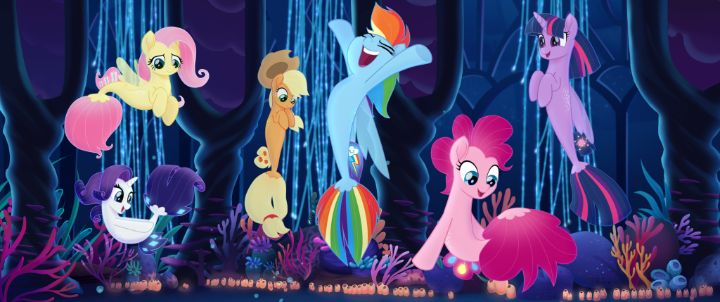

As I started going through some recent 2D animated theatrical films from the USA, including "Teen Titans Go To The Movies" and "The Bob's Burgers Movie," I figured I was missing a big one: 2017's "My Little Pony - The Movie." Yes, these were all based on cheaper television shows, but these were the closest we've gotten to Hollywood putting 2D animation back to theatres since Disney's "Winnie the Pooh" in 2011. Beggars can't be choosers. And "My Little Pony" was the first to herald this new "comeback" out of the bunch. I should start with a disclaimer: I'm not a "brony," if only because I haven't followed the television series. If you don't know what that means, we should start with the television reboot "My Little Pony - Friendship is Magic" that started in 2010. The franchise existed for decades prior as a Hasbro toy line, but the flash-animated TV series revived it for a new audience. It was modern, colourful, perky, and effortlessly cute. It satisfied all the elements I personally like in a kids show - it had memorable and likable, one-dimensionally simple characters, and didn't dwell on tough issues like bullying or selfishness, instead aiming to teach lessons of friendships through fun and entertainment. This not only struck a chord with little girls, but people of all ages... including adult men, both for the cuteness that melted their hearts and for the fantasy lore of pony princesses and their kingdom of magic. Fans of the show REALLY got into it. Again, no judging, I totally understand why. Just keep in mind I watched this movie as a newbie. And I was impressed. I didn't have high hopes going in, but "The Movie" is way better than it has any right to be.The story is set in the pony kingdom of Equestria, where series lead Princess Twilight is organizing the first ever Friendship Festival. It's a big job, and every pony in the land has come out to celebrate, so naturally, she's stressed and worried to ensure everyone is just right. Suddenly, a warship appears, led by a new enemy (a pony called Tempest) who declares she'll take the four princesses' magic on behalf of the Storm King. Her army makes short work, but Twilight and her friends manage to escape. Using a last-minute clue from Princess Celestia before her capture, Twilight, Pinkie Pie, Rainbow Dash, Rarity, Applejack, Fluttershy, and their dragon friend Spike travel across the land to new kingdoms in search of someone who can help save Equestria, and Tempest chases after them. It's a simple story, but it allows the classic heroes of the show to travel to new and exciting lands, and more specifically, to meet new characters. There's a star-studded cast filling these new roles, including Sia (a performer for the Friendship Festival), Kristin Chenoweth (an energetic hippogriff), Zoe Saldana (a parrot pirate captain), Liev Schreiber (as the Storm King) and more. Emily Blunt nails the controlled coldness of Tempest, giving us a really cool villain for this movie meant for young children. The legacy characters are all voiced by their television actors, which is nice to see. The one minor gripe is that the new characters feel like throw-aways, and could have been written to have a larger role in the story.  The adventure is surprisingly action-packed and exciting. And it's a musical! None of the songs are too memorable outside the movie, but the soundtrack is fun enough to want to repeatedly play in the car on your kid's way to school, which is probably the right balance (if these were earworms, you'd be sick of them too quickly). The movie had all the trappings of your typical kids movie, but it handles everything earnestly and with care. There's even a few minor lessons about friendship along the way. I, a mid-aged adult male, had a big silly grin for most of the film. So the movie is fun, has good music, and great voice acting. You'd think the simplistic but servicable Flash animation of the show would bring things down. But on the contrary, it's one of the best parts of the movie! The production team clearly cared about keeping the general look of the show while elevating it for the scope of a movie theatre, and it succeeds, with ambitious 3D camera shots and multiple layers of compositing. Even smaller details, like Tempest's head animation, are given special detail. And of course, everyhing a manically and energetically cute. For most of the movie, it defines a new standard for what 2D Flash can look like. For some other parts... the character designs don't look great in every shot (a cat con-artist named Capper in particular), perhaps looking a little too soft and inoffensive, and therefore cheap-looking. But these moments were relatively small, and most of the movie looked far better than I expected. I'm sure "My Little Pony" has just as many haters as it does fans (like any other super-popular property), and this movie won't convince you otherwise. But let haters hate, they're missing out. If you're an animation fan and haven't yet seen "My Little Pony - The Movie," it's definitely worth making up an excuse to give it a try. Maybe babysit the neighbours' kids and host a movie night. The Bluray even includes a recipe for rainbow cupcakes with extra glitter, so you have everything you need! ... OK, it's not so incredible that you have to be as excited as Pinkie Pie, but her energy's infectious. Whatever the case, if you do enjoy the movie, don't be embarrassed - there's an army of Bronies right behind you.
- "Ani" More reviews can be found at : https://2danicritic.github.io/ Previous review: review_My_Hero_Academia Next review: review_My_Neighbor_Totoro